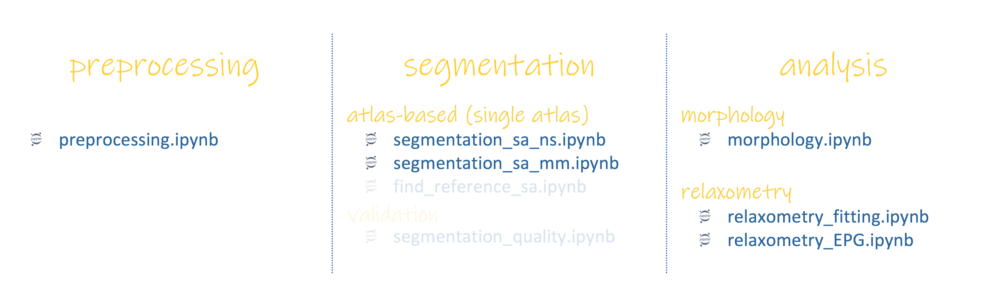

Installation¶
An overview of pyKNEEr, its installation, and its demo are presented in a youtube video, which we recommend watching as a comprehensive introduction. The current and following pages provide more details.
Note
The commands in this documentation are for Mac OS. If you work on Windows:
Substitute
/with\Use the python terminal provided in the Anaconda distribution
python¶
We recommend to install python through Anaconda, a platform providing a complete distribution
Download the latest release of Anaconda for your operating system
Install Anaconda as you would do for any software (see the official documentation)
Important
Make sure that you are using python 3
pyKNEEr¶
Go to terminal, copy/paste the following line and press enter:
pip install pykneer
The installation contains elastix v4.8 for atlas-based segmentation. If you work on a Windows or a Linux computer, you might need to set the environment variables for elastix
Note
We recommend to install pyKNEEr in a python virtual environment, although it is not necessary
Demo¶
To become familiar with pyKNEEr, we provide a demo that you can replicate following the step-by-step instructions in the following pages
Download the latest version of the demo images here (2.1 GB)
Important
Make sure that all the folder names that constitute the path to the demo images have no spaces.
E.g./home/learning_pykneer/demo/and not/home/learning pykneer/demo/Unzip the file and open it. It contains two folders and some files:
input: It is the basic folder to work with pyKNEEr:
The folder
originalcontains images of subjects01, which contains:DESSimages to get familiar with atlas-based segmentation and \(T_2\) mappingcubeQuantimages to get familiar with multimodal segmentation and \(T_{1 \rho}\) mapping
Both acquisitions will be used to get familiar with preprocessing and morphology analysis
The folder
referencecontains the foldernewsubject, which contains:reference.mha: Reference image for the atlas-based segmentationreference_f.mha: Femur mask of the reference imagereference_fc.mha: Femoral cartilage mask of the reference image
Note
You can use this reference image and its masks also when segmenting your own data
Input files (
.txt) to run pyKNEEr workflow and a subset of Jupyter notebooks (.ipynb). These files are explained in the next pages
Important
In the following instructions we will assume that
inputis our working directoryoutput: It contains the outputs of the demo, so you can compare your findings with ours